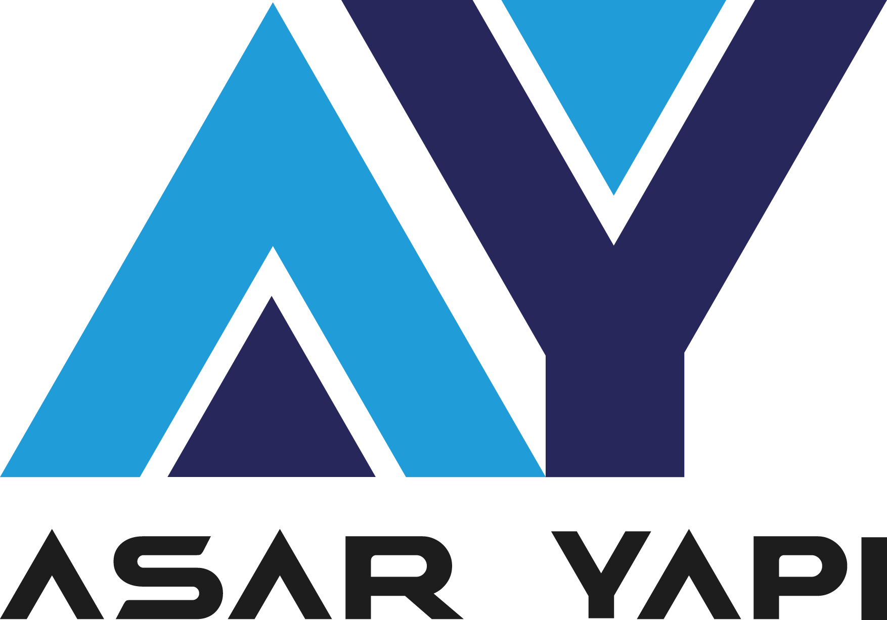

|  | Anasayfa | Hizmetler | Hakkımızda | İLETİŞİM |
2020 yılında inşaat mühendisi Ahmet Büyükşar tarafından kurulan ASAR YAPI, kurumsal altyapı olan Hale Turizm İnşaat Anonim şirketinin devamı niteliğindedir.
 1960 yılında Konya'da doğdum
1960 yılında Konya'da doğdum
Lisans eğitimimi 1981 yılında Kara Harp Okulu İnşaat Mühendisliği bölümünde tamamladım.
1997 yılında İstanbul Bağdat Caddesi'nde 17 muhtelif dairenin tadilat, dekor ve satışını yaptım.
1999'da Hale Tur. Taş. Gıda İnş. Tem. Hiz. San. Tic. A.Ş kurdum ve yönetim kurulu başkanlığını yaptım.
2008-2010 yılları arasında İstanbul Kadıköy'de 15 daireli bina, Ataşehir'de ise 9 daireli binanın inşaat müteahhitliğini yaptım.
2020'den itibaren Konya 33094 ada, 3 parsel de baba yadigarı arsada yapı sahibi, müteahhit ve şantiye şefi olarak çalışmaktayım.
Yabancı dil olarak İngilizce iyi, Arapça ise Okuma ve konuşma az, yazma ise zayıf olarak bilmekteyim.İyi düzeyde bilgisayar ve Microsoft Office kullanmayı bliyorum.